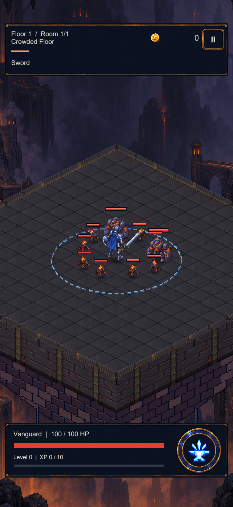
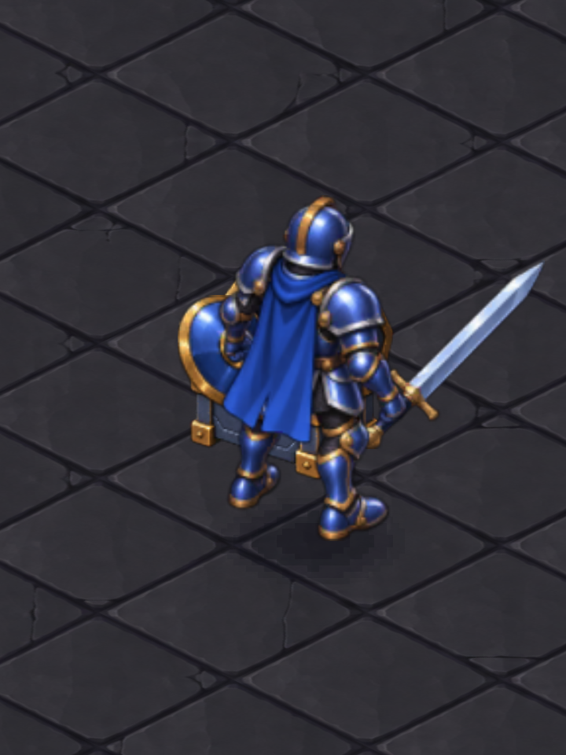
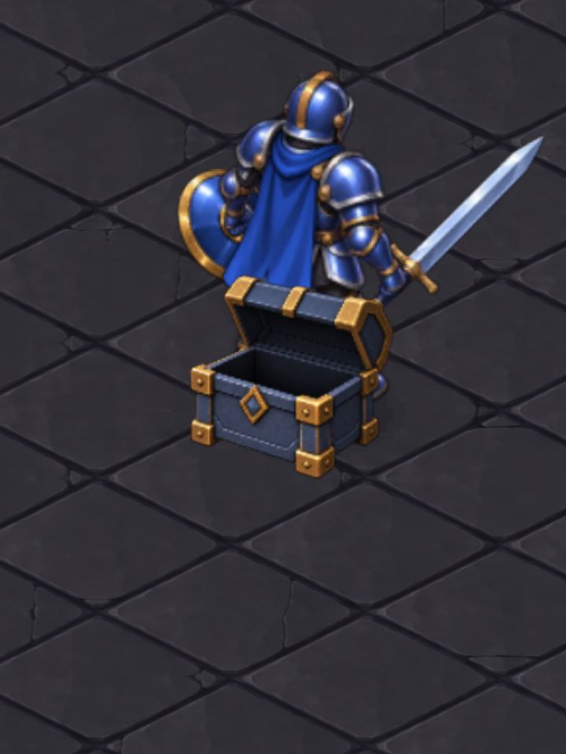
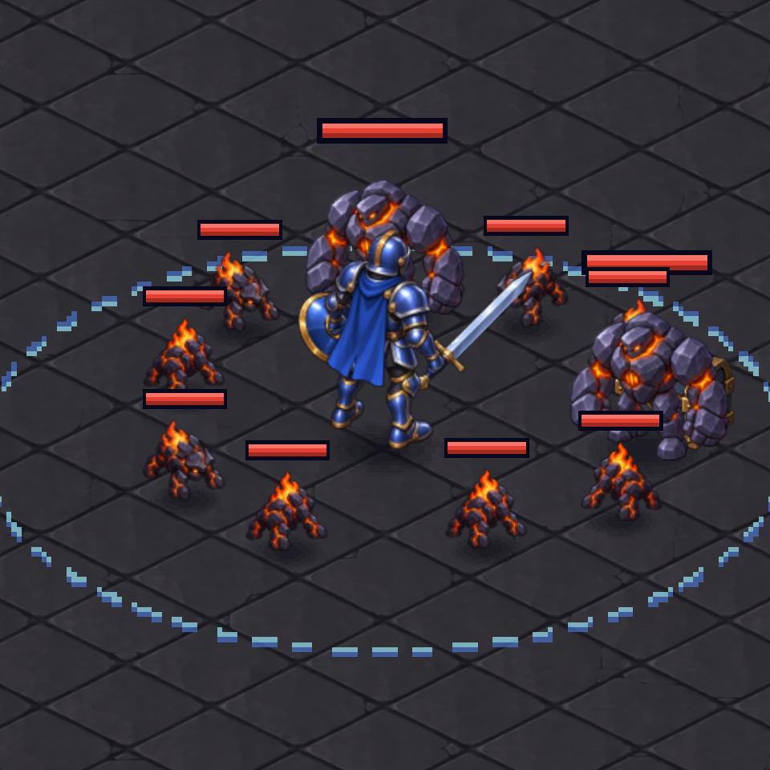

CRYPTFORGE / IMPORTED ART / UNITY
Sandık açılıyor; ödül beklemiyor.
Paylaşılan boyalı görseller ve ayak konumuna göre çizim sırası. Bu sayfadaki görüntüler gerçek Unity test sahnesinden; telefon görüntüsü değildir.
Oyun sahnesi

Ödül temas anında verilir. 0,18 saniyelik görsel açılma duraklatıldığında bekler; aynı sandık ikinci ödül vermez.
Derinlik kontrolü
Kahraman önde

Kahraman arkada

Gövde, ekipman ve darbe parlaması birlikte sıralanır. Can çubukları ve zemin efektleri ayrı katmanlarda kalır.
Kalabalık hâlâ kalabalık

Doğru derinlik sırası, düşmanın arkasında kalan sandığı görünür kılmaz. Bu görüntü kalan örtüşme sınırını gösterir; fiziksel çarpışma veya düşman yerleşimi değiştirilmedi.
Kapsam ve doğrulama kaydı · Önceki sıralama sorunu · Kaynak tasarımlar